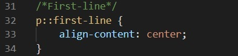
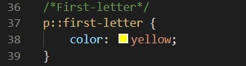
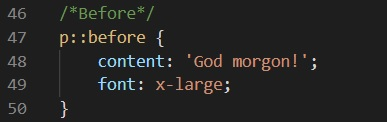
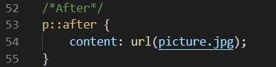
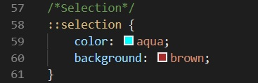
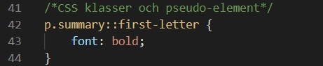

Av Eddie och Nils
CSS pseudo-element används till att ändra "style" på specifika delar av ett element. För att välja vilken del av ett element du vill ändra lägger du till "::" efter elementets namn och sedan t.ex. "first-letter" eller "first-line".
::first-line används till att "styla" den första raden i exempelvis en paragraf (p::first-line {}). ::first-letter påverkar endast första bokstaven i en text. Det är inga problem att använda flera pseudo-element samtidigt. p::first-letter {font-size: xx-large;} p::first-line {font-size: large;} kommer göra första bokstaven i paragrafen till en större font än reste av den första raden.
 ::before gör att man kan lägga till innehåll före ett elements innehåll. Det kan vara extra text, en bild eller något annat.
::after gör att man kan lägga till innehåll före ett elements innehåll.
::selection påverkar det som besökaren på en websida markerar/"highlightar". Den kan göra så att användaren tillfälligt ändrar fonten, fontstorleken, färg på texten och/eller bakgrunden osv.
Ex: element.class::pseudo-element{*styling*}
